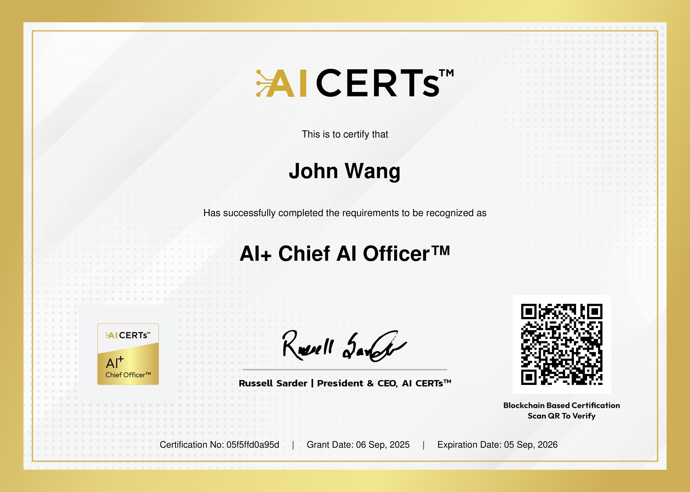
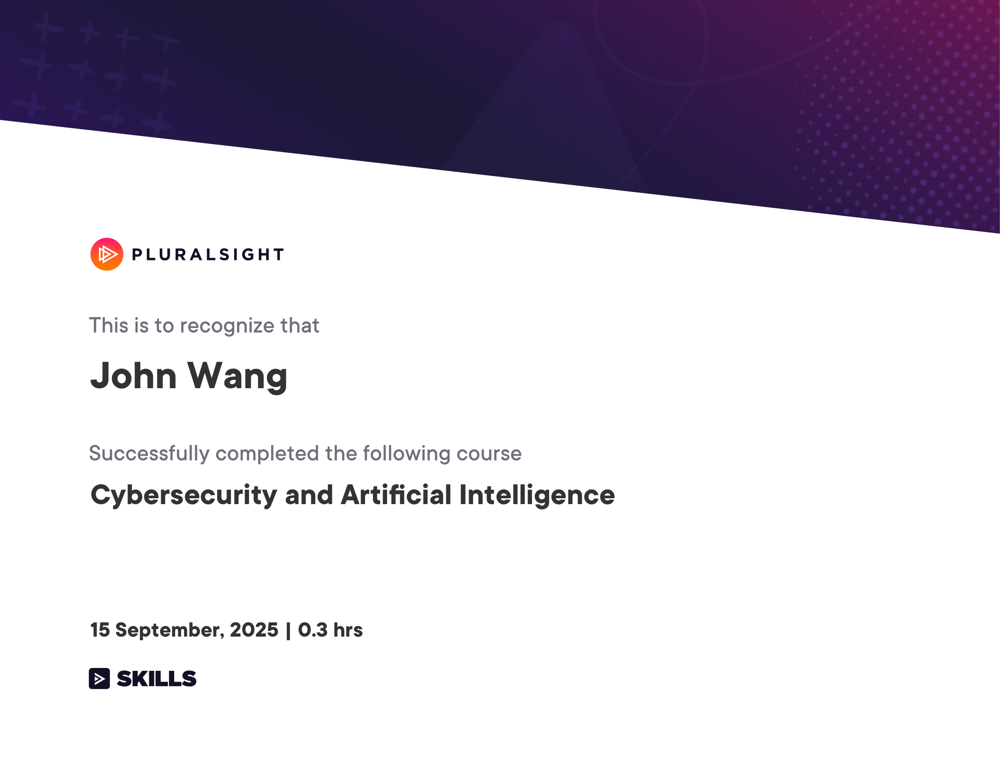
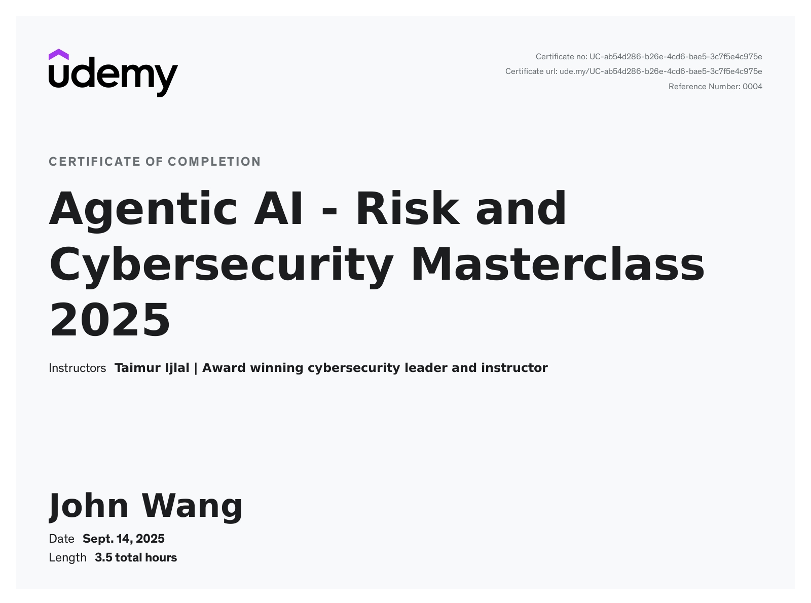
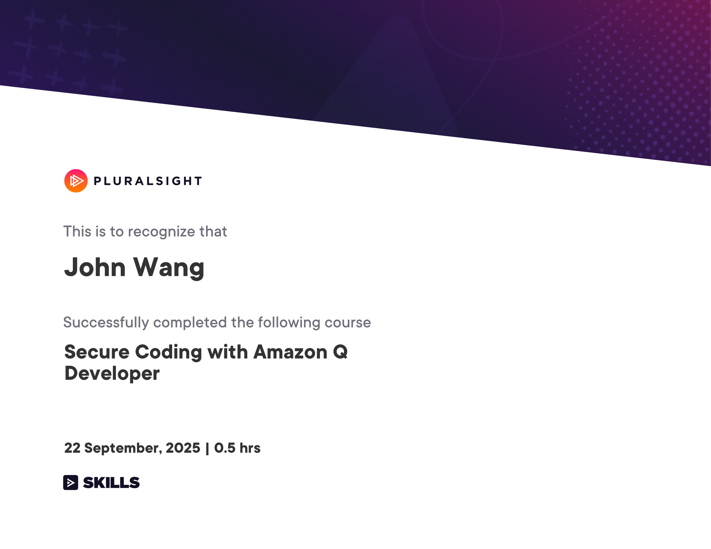
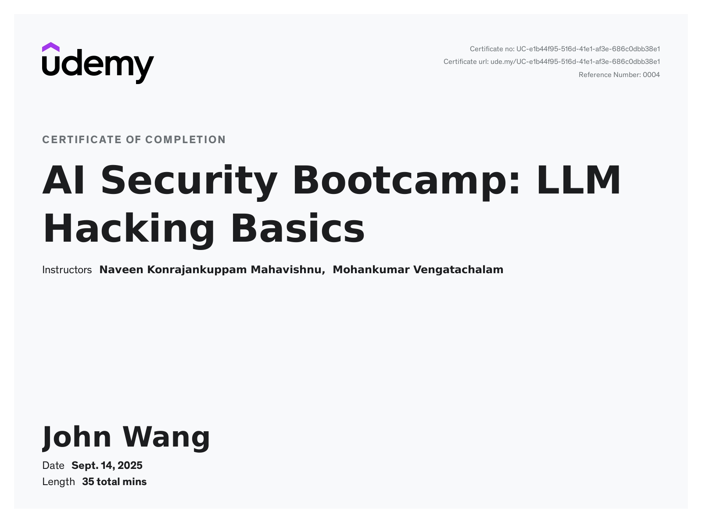
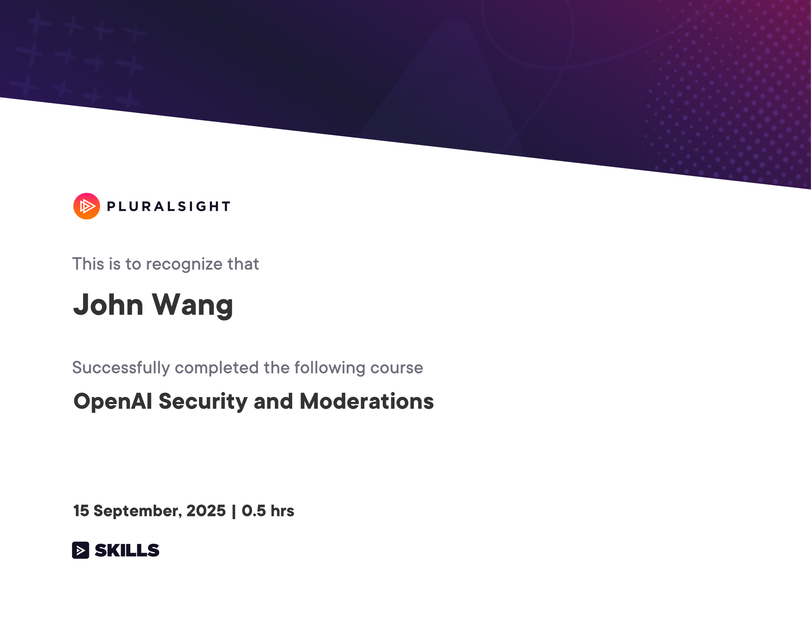

John's Security: AI Certificates
- Chief Artificial Intelligence Officer (CAIO)
- Fundamentals
- AI Agents
- AI Assistants
- Generative AI
- AI Security Bootcamp: LLM Hacking Basics from Udemy by Naveen Konrajankuppam Mahavishnu, Mohankumar Vengatachalam
- Security Hot Takes: ChatGPT from Pluralsight by Xavier Morera
- OpenAI Security and Moderations from Pluralsight by Chris Jackson
- Security Hot Takes: ChatGPT from Pluralsight by Michael Teske, Aaron Rosenmund
- Security Risks and Privacy Concerns Using Generative AI from Pluralsight by Dr. Shaila Rana
- Generative AI: Intelligent and Dangerous? from KnowBe4 by Dr. Swantje Westpfahl
- InfoSec
Chief Artificial Intelligence Officer (CAIO) (2)
Chief Artificial Intelligence Officer from Copenhagen Compliance by Kersi Porbunderwalla
AI+ Chief AI Officer™ from AI CERTs

Fundamentals (3)
Defending Against AI-Generated Attacks from Codecademy

Cybersecurity and Artificial Intelligence from Pluralsight by Christopher Rees

AI Security from Lakera

AI Agents (1)
Agentic AI - Risk and Cybersecurity Masterclass 2025 from Udemy by Taimur Ijlal

AI Assistants (1)
Secure Coding with Amazon Q Developer from Pluralsight by Tom Taulli

Generative AI (6)
AI Security Bootcamp: LLM Hacking Basics from Udemy by Naveen Konrajankuppam Mahavishnu, Mohankumar Vengatachalam

Security Hot Takes: ChatGPT from Pluralsight by Xavier Morera

OpenAI Security and Moderations from Pluralsight by Chris Jackson

Security Hot Takes: ChatGPT from Pluralsight by Michael Teske, Aaron Rosenmund
Security Risks and Privacy Concerns Using Generative AI from Pluralsight by Dr. Shaila Rana

Generative AI: Intelligent and Dangerous? from KnowBe4 by Dr. Swantje Westpfahl

InfoSec (2)
Building the AI Security Roadmap from Silicon Valley Certification Hub by Tiffany Saade
AI, Phishing, and Cybersafety from KnowBe4